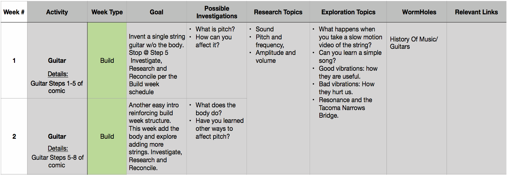

30 Week Curriculum Guide
Mars is a Launchpad
Mars is meant to be a fun and engaging, general overview of the major stem topics where your child learns through hands on experiences. One day you might learn about circuits by building the electric racer. Next week you could be learning about hydraulics by building the crusher, followed by another circuits project when you invent the electric guitar. Bouncing around to these different topics does two things. For one, it keeps things fresh and interesting. It also reinforces and builds on what they already learned. So when you make it to the second circuits project, we won’t tell you all the steps. We will challenge your kid to use what they learned in the last experience to figure it out.
Probably more importantly though, with such a broad overview, your kid will encounter topics that they find interesting. This is where the launchpad analogy comes in. Once they work through some of the challenges you will notice topics that interest them. From there our engineers can help point you in the right direction with some more research topics, project ideas, videos, etc. to keep them curiously learning.
The Goal
We want your kid to learn problem solving skills. Because these are skills are SO SO SO SO SO SO SO (one more so? ...I think so...) SO important. It doesn’t matter what they choose to be “when they grow up.” It could be an engineer, scientist, or just your average DIY’er. We want them to have the courage to face a problem, make an informed decision, try it, learn from the results and try again. I guess the technical term is the scientific method.
Oh and on the journey to Mars, they will get a general overview to some of the main science topics like circuits, forces, motion, energy, hydraulics, mechanical advantage, electricity and magnetism, gears, aerodynamics, mechanisms, tools, measurements and more all by making cool stuff.
Warning
This is called a Challenge Crate for a reason... This will challenge your kid. Just like we get stronger by stressing our muscles. By challenging them, we are helping them become stronger problem solvers.
We will need your help in two ways.
- The first is physical help. Some parts may be di cult for them to put together. This allows them to try, and realize where they need help. They then have to communicate with you, what they need help with. Be careful though, we have seen kids ask for more help than they physically need.
- We will also need your help by encouraging them. If they are stuck, ask questions. Questions like: What are you trying to do? What seems to be the problem? How do you think you could solve this problem? We call these “leading questions” because they help lead them in the right direction to discover the answer themselves. There is a list of these in another section labeled Leading Questions. Oh, and if they are really stuck, we are more than happy to help. We would love to hear from them!
We HATE Worksheets
What kid wants to do a worksheet? Instead, we give them a research log where we challenge them to make observations, document their findings, make note of failures, write down something they are curious about, ask good questions, jot down ideas and solve problems just like a real engineer does. More than help encouraging them to complete this. This may be unnatural at first. Just wait though eventually they will be making log entries on their own. So encourage them to carry their Research Log with them and make log entries. After they fill their first log, let us know and we will send them another.
Leading Questions
This is where the magic happens. When we teach these classes, we never give answers. When kids get stuck, we ask questions. Questions like...
- Tell us what is going on?
- What do you think is going wrong?
- How do you think you can figure it out?
- What does this part do?
- What could be helpful?
- What else? (This is a favorite question because it encourages lateral thinking.)
- What else?
- What else?
The Path
In getting from A-B there is a path that is most direct and others have detours. We are convinced, no kid is standard, so why should their learning plan be standardized?
Our favorite path is the one where they follow their curiosity. They take their time and explore topics as they are interested. If you get behind because they want to dive deeper into something like the can crushing robot...Then great!
Some kids will want to work straight through the mission and skip any investigation. If this is the case, you might want to circle back after and encourage them to explore the science behind the projects.
If you prefer more weekly structure, we have a proposed path below.
Whichever path you choose, there is no right answer.
For more details about the Proposed Path section keep reading.
Suggested Resources
We recommend three main Resources:
- The RumbleLab YouTube Channel
- The Internet (Relevant links included in the 30 Week Guide)
- The Usborne Science Encyclopedia
First, if you are having problems with the paper instructions, check out our YouTube channel. We have build videos for each of the challenges. Click Here or search RumbleLab on YouTube
In the Proposed Paths section, we have links where you can dive deeper into the science topics covered by each project. The connected world is really cool. We now have instant access to infinite amounts of information. The important part is learning how to find relevant information and do something with it. Use this as a teachable moment. If they are interested in a topic and want to learn more, check out some of the links we provide in the table at the end of this guide. You might also try a Google or YouTube search on some of the relevant topics.
For those of you who would prefer a book, we understand. It’s hard to beat the feeling of cracking the spine.;)
We generally find a science encyclopedia to be a good resource. You should be able to find one at your local library. If not, they can be pretty cheap on Amazon. Personally, our favorite is “THE USBORNE SCIENCE ENCYCLOPEDIA.” Maybe try using a book in conjunction with the internet.
I Need Help!
Awesome! We love helping. You are more than welcome to send us an email at Rumble@RumbleLab.com. We also have a super awesome Facebook group where you can post a question. We are very active there, but there are some awesome families just like yours who can jump in and give suggestions. We totally recommend you check it out! Learn more HERE.
Wormholes
A wormhole is a theoretical passage through space-time that could create shortcuts for long journeys across the universe. We have highlighted a couple of proposed metaphorical wormholes in the table at the back of this guide. No they won’t transport you across the universe. But they could help transport you from working on a fun science project to a relevant and purposeful math topic...
For example: We understand math is a tricky subject. It’s not very COOL. But, what if your kid saw it as a tool that they could use to be a better problem solver/engineer/maker? On one of their first challenges, they invent an outerspace hydraulic can crusher. Well the crusher, it works because of mechanical advantage. And mechanical advantage...well to really use it, you need to understand the concept of area. And to do the whole “pies are squared thing”(I’ma make a great dad, right? ;)), it helps to know a little algebra. When you give math a purpose it becomes a little more...COOL. Try it!
Proposed Paths (Curriculum)
Don’t be intimidated, we have reviewed a lot of curriculum and slept through just as much. I think you will find this to be the easiest, most laid back, curriculum you will ever follow. Each family will work through this at their own pace. You’re more than welcome to follow your own path and do activities and challenges as you please. But we do want to give you some “fuel” for your kid to consume as they get curious.
If you follow this path, we have 3 di erent week structures.
- Build Week Structure
- ReEngineer Week Structure
- Innovation Week Structure
Starting this will take a little more involvement on your part but once they get up and going, you will be amazed.
The following outline of the different weeks serves as your guide. For the kids, we have our How to Engineer Guide. For example, if it is a Science Topic Research Day, encourage them to reference the Research Section in the How to Engineer Guide. It will give them a kid-friendly overview of what they need to do and how to do it.
Build Week Structure
| Day 1 | Day 2 | Day 3 | Day 4 |
|---|---|---|---|
| Build/Investigate | Build/Investigate | Research | Reconcile |
| Day 1 | Build/Investigate |
| Day 2 | Build/Investigate |
| Day 3 | Research |
| Day 4 | Reconcile |
Please, treat this weekly structure loosely. When the building bleeds over into Day 3, great! You are getting more mileage out of your crate. If the week goes short, use the rest of the time to check out some of the Exploration Topics in the table at the end of this guide. If your child is going down a rabbit hole, curious about a specific topic, PAY ATTENTION! Let them go, make a note and let us know. This will help us point you in the right direction for other activities they may be interested in.
Build
On build days, we are doing exactly what it sounds like. They are working with their hands and figuring out how to make something. They use their Mission To Mars Comic and their Mission To Mars Survival Guide to figure out what they are building and how to build it.
Just a little note on building...Some kids will want to dive in and try to figure things out on their own. Others will want to look at instructions or watch a video. Some may need a little encouragement. As they progress through the Mission, you will notice, we challenge them to figure things out on their own more
Investigation
This is one of our favorite parts. This is where they “play” with the project and see if the science doesn’t make itself obvious. Most of the time it does. They can even use the scientific method to see if things behave the way they think they do.
For example, maybe after working through the paper airplane activity, it seems like the wings of a plane are what hold it up. So if the wing is bigger it should stay in the air longer...right? Well, referencing the How To Engineer Guide, they can design and run a simple experiment to try and get a better understanding of what is going on.
To make some of these discoveries you may need to ask Leading Questions like….What did you notice? What happens when you do X? Why is this better than that? Is there an experiment you could do to figure that out? Be sure to encourage them to jot some of their thoughts about the science in their Research Log.
Those are some of our go-to leading questions but every kid is different. The end goal here is to get them exploring the science behind the projects. You can also hop on our Facebook group if you need more help for these investigation days.
Remember, this outline serves as your guide. For them, we have our How To Engineer Guide that you can encourage them to work with as a reference.
Research
First, we have some playlists on our YouTube channel that we think do a good job. Check them out HERE. If there is a topic you really wish we would cover, let us know!
Otherwise, research should be pretty straight forward. Personally, we prefer the internet. It's the tool that your kids will use most in their career for research, why not start now? Learning how to find answers on the internet is incredibly powerful and boils down to asking good questions. This can also be a great opportunity to teach them about acceptable and responsible use.
You can also try a Google search. Maybe check out some other YouTube videos. For example, if you want to understand how electricity works, try searching in YouTube “how electricity works.”
Reconcile
Now for the magic. After investigation and then researching the topics, what makes more sense? What were you wrong about? What was surprising? Again, their guide for this can be found in the How To Engineer Guide.
How to Follow:
Take a look at the table at the end of this guide. Week 1’s activity is the guitar. It also says it's a Build week.Referencing the Build Week Structure table above, we see that Day 1 and 2 of our Build week is Build/Investigate. So on days 1 and 2 they will work on building the guitar and doing some investigation while building. They will need to reference the Mission To Mars Comic and The Mission to Mars Survival Guide for building and the How to Engineer Guide for investigation.
ReEngineer Week Structure
| Day 1 | Day 2 | Day 3 | Day 4 |
|---|---|---|---|
| Brainstorm | Experiment | Analyze and Repeat | Report |
The ReEngineer Week Structure is all about the scientific method. See our post about the scientific method HERE. We have it broken into days but as your kid progresses through the mission, you may find that they brainstorm, experiment and analyze on one day. The next day, they might start another run through the scientific method.
Brainstorm
This step is pretty straight forward. This is where they are throwing out ideas about ways they could make their invention better. You can ask questions like...After exploring the science, what are some things that you think you could tweak to make it better? Why do they think that would make it better? Encourage them to log this in their Research Log.
For example they may log: I think larger wings on a paper airplane will make it stay in the air longer because the wings are what is creating lift which is holding up the plane.
Experiment
Here they are designing a test that will help prove or disprove their hypothesis that they generated during the brainstorming process. Sounds complicated but it is as simple as writing. “I will fold the same paper airplane with 3 di fferent wing sizes and measure and record the distance that they travel.”
Then complete the experiment and log the data.
Analyze and Repeat
What does your data tell you?
For example, “Of the 3 planes, the middle sized wing went the furthest. I will try a di erent style of plane to see if this is true for other planes or just this design.”
Report
This is nothing formal. We just want them to be able to communicate what they found after working through the ReEngineering Week Structure. Looking at all their experiments and data, what can they say and prove.
How to Follow:
Let’s assume we are following the 30 week schedule at the back of this guide. It’s the end of week 4. We have just finished the Electric Racer Build. Well, for week 5, we have a ReEngineer week where they are using the scientific method to improve their Electric Racer. So day 1 of week 5, they can brainstorm ways they could improve their racer.
Again, they will reference the Brainstorm section in the kid friendly, How To Engineer Guide for tips on conquering this day. They will then move on to Experiment, Analysis, Repeat and Report. If this week runs short, feel free to move on to the following week. Otherwise you can dive into some of the Exploration Topics
Innovation Week Structure
| Day 1 | Day 2 | Day 3 | Day 4 |
|---|---|---|---|
| Problem Focus | Experience Focus | Implementation | Report |
| Day 1 | Problem Focus |
|---|---|
| Day 2 | Experience Focus |
| Day 3 | Implementation | Day 4 | Report |
The Innovation Week Structure is all about taking what they have learned through the other weeks and applying it. It’s goal is to encourage out of the box thinking and to help foster creative problem solving skills.
Please please please, do not overemphasize structure here. Innovative thinking does not follow a framework and is impossible to force. Sometimes out of the box ideas come from out of the box methods. For examples, we have several families recommend going for a hike while bouncing around ideas. You know, to get those creative juices flowing. The following topics are just some suggested angles of attack. Eventually, they will start thinking outside of the box on their own
Problem Focus
One thing we are always thinking about is…”what is a problem that we find frustrating?” For us, anytime we come across a problem that we find frustrating, or are curious about, we jot it down in our log. We hope you encourage your kid to do so as well.
For example, we came across a problem the other day when we were camping. When we camp, we like to build a fire. We also worry our fire will get out of control and start a forest fire when we aren’t paying attention. We then thought this could be a bigger problem, especially in areas where people need to keep fires going all night for warmth. We didn’t have a solution, but just jotted it down in our Log.
Experience Focus
We also like to toss around and discuss what we learned. Think “How could what we learned be useful?” We will throw out any and all ideas.
For example: maybe after completing the Robot Mechanic Simulator you think of a couple of ways you could use a circuit. One way might be that you could use a simple circuit as some sort of simple alarm...
Implementation
This is where they get to start bringing their idea to life. Somewhere, a problem and what you learned will meet and you can begin to think about an innovation. This is where the fun begins. Let them go as in depth as they want. At a minimum, encourage them to draw what they think the finished design will need to look like and label all the parts it will need.
If they are really gung ho, encourage them to make it. If they want help, let us know.
Maybe investigate CAD. We build all our projects using a free, internet based CAD program called OnShape. It is free and incredibly powerful. You can start by exploring some of our models. Next encourage them to try making their own model of something. They have some wonderful tutorials HERE.
Reporting
Here, all we expect is for them to outline the problem, what they need to solve the problem, a simple sketch of the design labeling the components and any challenges they may face. If they need help, let us know.
How to Follow:
Just like before. Week 9 is an innovation week. It occurs after the hydraulic crusher build is completed. We want to see if they can figure out another way they can use hydraulics. You will notice Days 1 and 2 aren’t divided. This is because the ideation phase is really di cult to fit in a box. They might find the experience first method works best, but they might also prefer another method. Be flexible and have fun
Possible Weekly Topics
You can use the link at the end of this guide to download a table that breaks down each week as a way to turn the Mission To Mars into a year long science curriculum. You can follow it as loosely as you would like.
For example: Week 1, they start out on the first challenge. They are working to invent a guitar. Following the Build Week Structure, the first week they can spend a few days making and investigating a simple guitar. Then for the next couple of days they can research the science behind it and reconcile their research with their investigations. Also, we have given you topics that they might want to investigate or research, along with exploration topics, segways and a few relevant links.
The exploration topics are useful for when they are exceptionally curious about a topic. You can also use them for filler material when a week runs a little short. You could also move on to the next week instead.
If your kid wants to skip a topic, we recommend you do. Make a note and circle back. If there is one topic in particular that isn’t clicking. Let us know, we are happy to help!
Boom! That's It!
It can require a good bit of your involvement at first but once they get up and going, they will have a awesome set of mental tools that they can use to crush any problem life brings their way.
Please, if there is an aspect to one of the weeks that your child is not interested in, move on, you can come back to it later. We really want to avoid a “bad science experience” which turns them o to science as a whole. Be flexible and know when to push and when to pass. If you need help with any of this please send us an email at Rumble@RumbleLab.com.
Thank you.
Seriously.
We’re on a mission to change education. Change it from this assembly line approach, where every unique kid is processed and stripped of any curiosity and uniqueness. To one that is more individualized. One where kids are passionately curious and are serious about trying to solve interesting problems. So we thank you, because none of it would be possible if you weren’t serious about their education.
Let's do this!